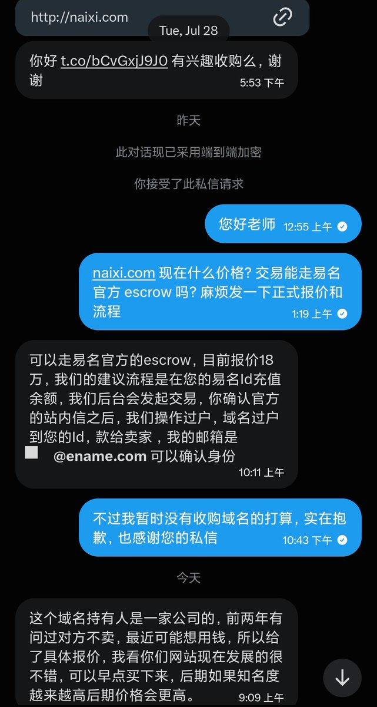

昨天易名中国的老师联系我，问我对naixi(.)com是否感兴趣，报价为18万人民币。提起易名，作为厦门人并不熟，但放在域名界我把它称为中国的GoDaddy，连谷歌的g(.)cn都在他家
之前有考虑做国内站，在万网看了一口价1.18万的naixi(.)cn，最后还是保持理性没买，在移动互联网时代后域名的地位不是很重了
像爱快用的是ikuai8(.)com，而不是ikuai(.)com大概也是同样的道理，更何况是2011年注册的老米了，要是naixi(.)net能卖10多万，我也能注册个naixi9(.)com接着用
最后还是感谢易名的联系，让我知道原来这域名还能卖那么贵，买这个域名的钱能直接孵化一堆[奶昔论坛]了。曾经有幸用过易名官方的secrow，也推荐国内淘米可以到易名看看，说不定能捡个不错的米。
之前有考虑做国内站，在万网看了一口价1.18万的naixi(.)cn，最后还是保持理性没买，在移动互联网时代后域名的地位不是很重了
像爱快用的是ikuai8(.)com，而不是ikuai(.)com大概也是同样的道理，更何况是2011年注册的老米了，要是naixi(.)net能卖10多万，我也能注册个naixi9(.)com接着用
最后还是感谢易名的联系，让我知道原来这域名还能卖那么贵，买这个域名的钱能直接孵化一堆[奶昔论坛]了。曾经有幸用过易名官方的secrow，也推荐国内淘米可以到易名看看，说不定能捡个不错的米。
